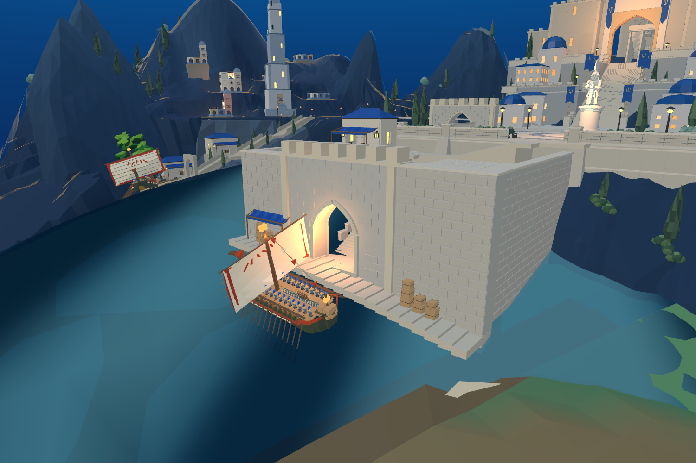
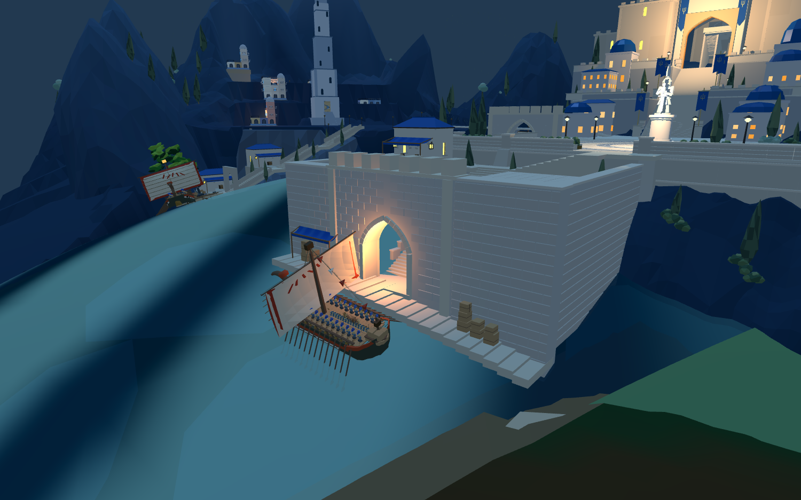
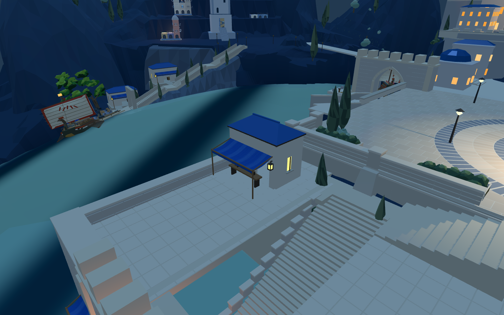

已进入8931原游戏并同步同一Godot普通圣城。复用现有港口建筑的蓝织布、木杆和木箱构件：左侧货物上方设遮棚，转折平台商铺增加柜台与加深遮棚。广场不增加店铺。




主路线332处采样无缺面或头顶阻挡；原静止船体与当前障碍/海床检查通过。共享蓝布贴图避免重复打包，本轮GLB为22482760字节，比上一轮增加80872字节。
尚未达成：整体目标美术、交易人物、实际装卸、船岸跳板和上下船。下一轮周边4/5处理原船实际连接；摊位显示和通路检查不代表港口游戏流程已经完成。